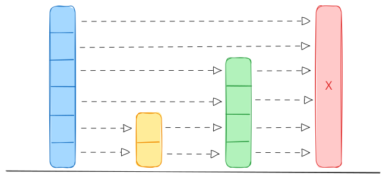
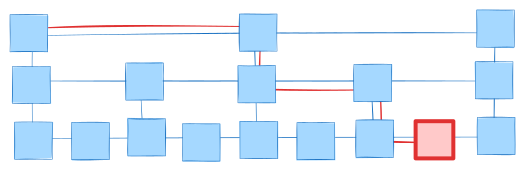

Skip-list
Jan 14, 2024
Skip-list - это вероятностная структура данных, похожая по функционалу на сбалансированные деревья поиска, однако отличается от них тем, что не имеет явного этапа балансировки. Это позволяет реализовать конкурентную версию skip-list без глобальной блокировки всей структуры данных. Более того, возможна lock-free реализация вовсе без блокировок (см. jiffy).
Описание структуры данных
Каждый узел представляет из себя узел связного списка. Вместо указателя Next на следующий элемент массив таких указателей. В данном массиве в элементе Next[i] содержится указатель на следующий элемент i-го уровня. Размер этого массива является вероятностной величиной, ограниченной некоторым значением.
const (
p = 0.5
maxLevel = 16
)
type Key cmp.Ordered
type Value any
type Node[K Key, V Value] struct {
key K
value V
next []*Node[K, V]
}
При создании узла ему выделяется значение уровня от 1 до maxLevel. Причем, с вероятностью 50% берется уровень 1, с вероятностью 25% - уровень 2 и так далее до последнего уровня (уровень узла - индекс в массиве next его предка).
func randomLevel() uint64 {
var lvl uint64 = 1
for rand.Float64() < 0.5 && lvl < maxLevel {
lvl++
}
return lvl
}

За счет того, что уровень узла выбирается таким образом, структура получается “деревянной” и в среднем остается сбалансированной.
Отдельно нужно хранить номер верхнего уровня для всей структуры SkipList, чтобы начинать поиск из этого уровня.
type SkipList[K Key, V Value] struct {
level uint64
head *Node[K, V]
}
Операции
Поиск
Поиск так же выполняется в операциях удаления и вставки.

При поиске элемента мы начинаем с верхнего уровня ссылок, переходя от элемента к элементу на этом уровне до тех пор пока не наткнемся на нулевой указатель или на подходящий элемент (больший или равный искомому). После чего спускаемся на уровень ниже до тех пор, пока есть куда спускаться.
func (sl *SkipList[K, V]) SearchNode(target K) *Node[K, V] {
node := sl.head
for i := sl.level - 1; i >= 0; i-- {
for node != nil && node.next[i].key < target {
node = node.next[i]
}
}
Если элемент равен искомому, то возвращаем его. В противном случае, возвращаем нулевой указатель.
Вставка
При вставке в skip-list сначала мы формируем путь поиска, по которому мы идем из head к искомому элементу (массив update).
func (sl *SkipList[K, V]) Insert(key K, value V) *Node[K, V] {
update := make([]*Node[K, V], maxLevel)
node := sl.head
for i := sl.level - 1; i >= 0; i-- {
for node != nil && node.next[i].key < key {
node = node.next[i]
}
update[i] = node
}
if node == nil {
return nil
}
Если найден ключ равный искомому - обновляем значение и выходим
node = node.next[0]
if node != nil && node.key == key {
node.value = value
return node
}
Если уровень элемента выше, чем верхний уровень в голове - обновляем верхний уровень в голове и добавляем в верхние уровни пути узел головы.
lvl := randomLevel()
if lvl > sl.level {
for i := sl.level; i < lvl; i++ {
update[i] = sl.head
}
sl.level = lvl
}
Создаем новый узел, ссылки из предыдущих элементов на следующие устанавливаем на этот новый узел. Ссылки на следующие элементы устанавливаем для этого нового узла
newNode := &Node[K, V]{
key: key,
value: value,
next: make([]*Node[K, V], lvl),
}
for i := uint64(0); i < lvl; i++ {
newNode.next[i] = update[i].next[i]
update[i].next[i] = newNode
}
В момент вставки нового элемента длина списка ссылок (а значит пропусков) определяется случайным образом с уменьшением вероятности попасть на уровень выше. Поэтому статистически при большом количестве вставок поиск по этой структуре данных работает за log(N), как и операции вставки и удаления, которые содержат в себе поиск.
Удаление
При удалении нам так же как и при вставке нужно сначала найти удаляемый элемент и сформировать массив элементов, которые следует обновить
func (sl *SkipList[K, V]) Delete(key K) bool {
update := make([]*Node[K, V], maxLevel)
node := sl.head
for i := sl.level - 1; i >= 0; i-- {
for node.next[i] != nil && node.next[i].key < key {
node = node.next[i]
}
update[i] = node
}
node = node.next[0]
if node == nil || node.key != key {
return false
}
Затем нужно обновить список ссылок предыдущих элементов на следущие
for i := uint64(0); i < sl.level; i++ {
if update[i].next[i] != node {
break
}
update[i].next[i] = node.next[i]
}
Затем нужно уменьшить верхний уровень, если он имеет нулевой указатель на следующий элемент
for sl.level > 1 && sl.head.next[sl.level-1] == nil {
sl.level--
}
Concurrency
Поскольку в структуре skip list каждый уровень - это связный список, то в отличие от деревьев тут нет операции ребалансировки, затрагивающей все дерево. Вместо этого мы имеем локальные операции вставки и удаления, затрагивающие соседние узлы. Поэтому skip list хорошо подходит для lock-free алгоритмов.
При конкурентной реализации skip list используем атомарные указатели и соответствующие операции для них, а так же операцию CompareAndSwap.
// TODO Concurrency
Маркер удаления
Для ускорения операции удаления можно применить оптимизацию - помечать удаляемый элемент маркером (lazy deletion). Добавим маркер удаления узла
type ConcurrentNode[K Key, V Value] struct {
key K
value V
next []*atomic.Pointer[ConcurrentNode[K, V]]
marked atomic.Bool
}
Тогда в операции поиска необходимо проверить этот флаг
next := curr.forward[0].Load()
if next != nil && next.key == key && !next.marked.Load() {
return next, true
}
return nil, false
Для операции вставки необходимо проверить ситуацию, когда ключи совпадают
- если ключ уже есть и не помечен, то ничего не делает
- если ключ есть, но
marked == true, - просто снимает флаг (marked = false) - иначе вставляет новый узел так же, как и в не конкурентной реализации (только используются атомарные операции)
next := curr.forward[0].Load()
if next != nil && next.key == key {
if !next.marked.Load() {
return false
}
next.marked.Store(false)
return true
}
В операции удаления мы не удаляем, а помечаем элемент как удаленный. При этом должен быть с какой-то периодичностью (или по времени или по частоте запуска) процесс очистки маркеров.
func (sl *SkipList) Compact() {
for level := int(atomic.LoadInt32(&sl.level)) - 1; level >= 0; level-- {
prev := sl.head
curr := prev.forward[level].Load()
for curr != nil {
next := curr.forward[level].Load()
if curr.marked.Load() {
if prev.forward[level].CompareAndSwap(curr, next) {
curr = next
continue
} else {
curr = prev.forward[level].Load()
continue
}
}
prev = curr
curr = next
}
}
}
Benchmarks
// TODO Benchmarks
Применение
- Redis
ZSET- range запросы - RocksDB’s
MemTable - ClickHouse
- Java
ConcurrentSkipListMap
Описанный в статье код доступен на github.
References
- https://www.math.umd.edu/~immortal/CMSC420/notes/skiplists.pdf
- https://15721.courses.cs.cmu.edu/spring2018/papers/08-oltpindexes1/pugh-skiplists-cacm1990.pdf
- https://www.cs.yale.edu/homes/aspnes/papers/opodis2005-b-trees.pdf
- https://opendsa-server.cs.vt.edu/ODSA/Books/CS3/html/SkipList.html
- https://arxiv.org/abs/2102.01044
- https://habr.com/ru/articles/230413/
- https://www.ietf.org/archive/id/draft-ietf-bess-weighted-hrw-00.html#name-weighted-hrw-and-its-applicat